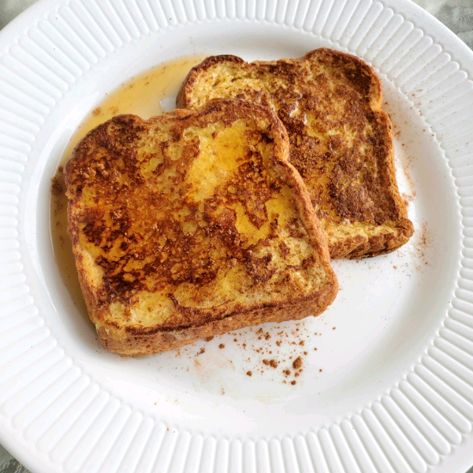

French Toast

Description
Dating back to the Roman empire, French toast is a sweet breakfast dish that can be served with honey, syrup, butter, whipped cream, etc.
Serving size: 2 people
Estimated time to make: ~10 minutes
Ingredients
- 3 eggs
- 1/4 cup sugar
- 1/2 cup of milk
- 4 slices of bread
- 1/4 tsp cinnamon
- 1/4 tsp vanilla extract
Steps
- Beat the eggs, add milk then whisk until the mixture has a nice cream color.
- Add the sugar, cinnamon, and vanilla extract and continue whisking.
- Pour the egg mixture into a wider pan that can fit a bread slice.
- Let the slices of bread evenly soak into the egg mixture(coat both sides of the bread slices).
- Heat a medium sized pan using medium heat and drop the slices onto the pan when ready.
- Let the bread slices cook on the pan for about 2 minutes each side.
- Serve warm with maple syrup and butter.